LP e dashboard — antes e depois¶
16/10/2026 · direção FR aprovada no protótipo v3 e aplicada ao produto.
A versão anterior usava o vocabulário do Instrumento: orbe, fósforo de osciloscópio, rótulos monoespaçados e números em sete segmentos. A nova direção faz do FR oficial a assinatura visual: matéria clara e champanhe sobre grafite, letras quadradas e pinceladas diagonais. Na ferramenta, a expressão da marca fica no chassi; não há uma cena competindo com os dados.
Este registro compara implementação e composição. Não é um estudo de usabilidade, uma medição de acurácia ou uma prova de publicação em produção. As regras vigentes estão em Design da interface.
Condições da comparação¶
- Antes: produto exportado da revisão
e5aa19d859e1f5cc402958a16ae43450abc9a905, sem alterar seu desenho. Capturas em servidor de desenvolvimento; o pequeno indicador circular do Next não faz parte da identidade do produto. - Depois: build de produção local do redesign, na mesma máquina e Chromium. Não houve deploy nesta entrega.
- Enquadramento equivalente: desktop de 1440 × 900 e celular de 390 × 844 pixels CSS, escala de captura 1,25. Cada par mostra o mesmo tamanho de viewport.
- Dados iguais: snapshot de demonstração versionado, 64 conversas sintéticas, sendo 59 com sinal e cinco sem sinal; período completo de 01/08 a 22/08/2026. O banco foi copiado para uma instância temporária compartilhada pelas duas interfaces, sem reanalisar ou modificar as conversas.
- Proveniência do snapshot: SHA-256
a18a4fa04e0a4ba74f145625727ba6812893327f7cf9c87a22849f08e2fbe9ef. - A API de demonstração identifica explicitamente motor dublê — números sintéticos. Esses números servem para conferir a interface, não são resultados de clientes reais nem validação do classificador.
- A LP estava sem snapshot válido de leituras gravadas. As duas versões mantêm ausência explícita; nenhum resultado foi criado para preencher a tela.
Clique nas imagens para abrir a captura em tamanho original.
Landing page¶
| Antes — Instrumento | Depois — FR |
|---|---|
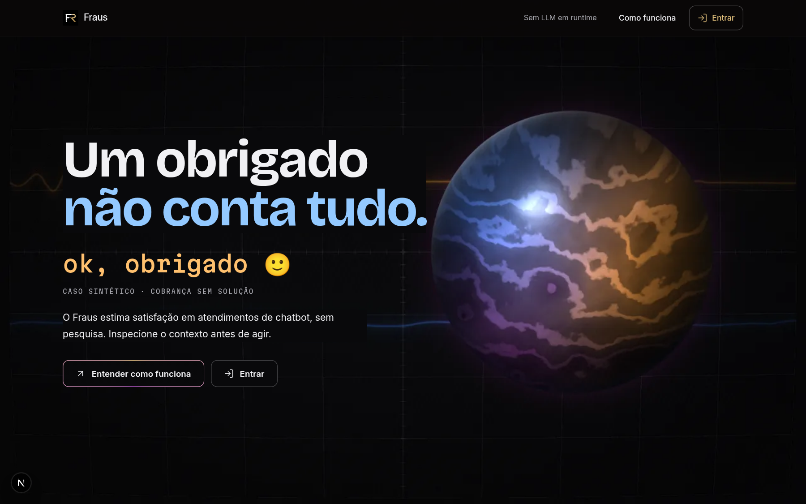 |
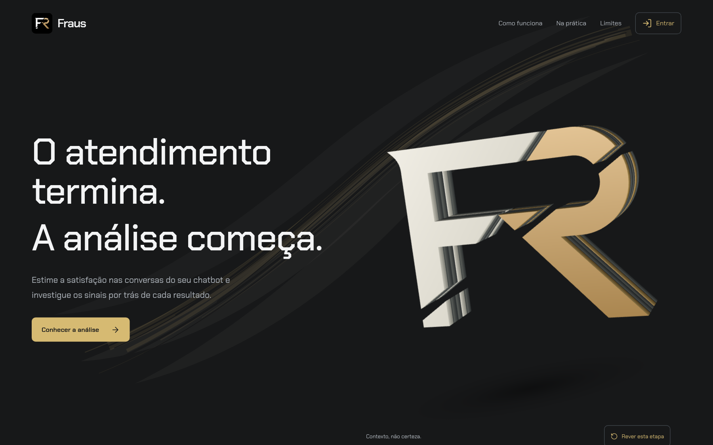 |


O que mudou¶
| Aspecto | Anterior | Nova direção |
|---|---|---|
| Assinatura | Orbe e linguagem de instrumento | Monograma FR oficial, com sua fenda diagonal, extrudado em camadas |
| Tipografia | Contraste entre display, prosa e rótulo mono | Chakra Petch local, quadrada, nos títulos, texto e controles |
| Fundo | Retícula e fósforo de osciloscópio | Composição SVG de pincel do cabeçalho ao fecho |
| Abertura | O caso “obrigado” abria a tese | Abertura de produto; o exemplo de linguagem ganha sua própria seção |
| Conteúdo | Narrativa técnica e cena de partículas | Contexto → sinais → uso na ferramenta → limites, com widgets e ícones |
| Movimento | Cena WebGPU e regimes de pôster | Um canvas WebGL sob demanda em contexto elegível; poses WebP no celular, em reduce ou em backend de software |
| Ações | Entender o método e acessar a conta | Método, dashboard, entrar e criar conta, com destinos reais |
As camadas do FR são arte de marca, não uma visualização das famílias ou features. Não se atribui significado estatístico à quantidade de placas.
Widgets e leitura¶
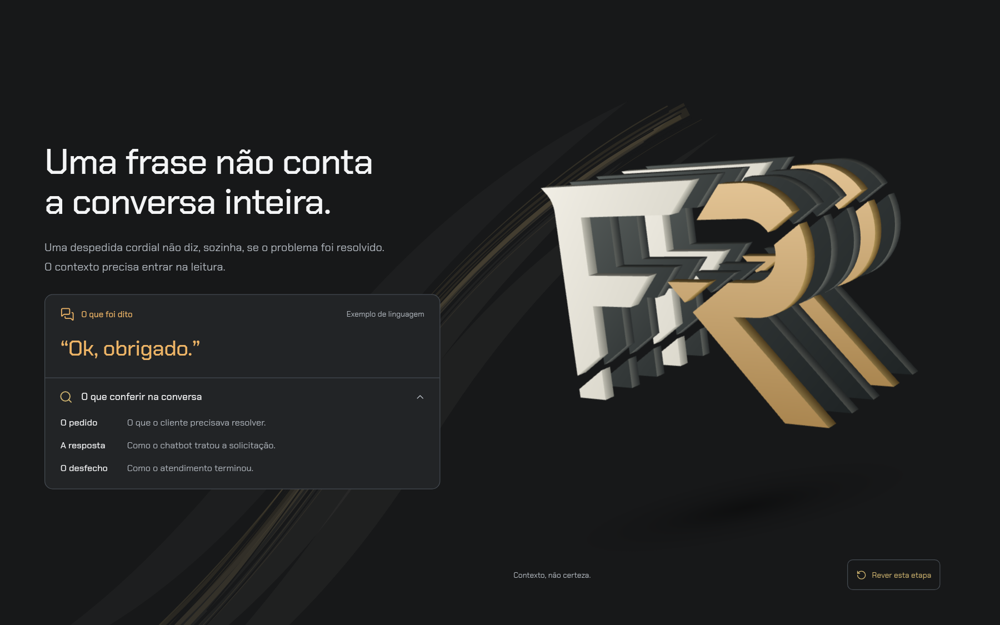
A frase aparece como exemplo de linguagem. O detalhe nativo explica o que conferir na conversa sem afirmar que cortesia seja satisfação ou insatisfação. Os sinais se dividem em leitura textual da mensagem, contribuições e horários; probabilidade textual não é apresentada como causa isolada da nota fundida.
Leituras realmente gravadas continuam com seletor, transcrição e procedência. Sem material válido, a região informa o que falta em vez de simular resultados.
O fundo não termina no FR¶
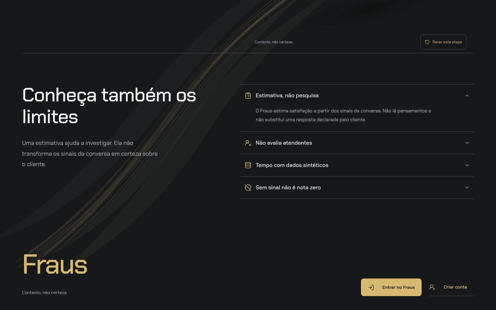
O pincel pertence à raiz inteira da LP, não ao palco sticky. O smoke confere a altura da camada em relação à página e abre detalhes que mudam o fluxo. Widgets têm fundo opaco; na composição SVG, o pior contraste calculado do texto secundário foi 5,41:1, acima do mínimo de 4,5:1. Isso não substitui verificar foco, tamanho, composição e legibilidade na tela.
Celular¶
| Antes | Depois |
|---|---|


O conteúdo fica em fluxo normal. A marca não exige WebGPU, nem JavaScript para
aparecer. Abaixo de 900px, picture seleciona a variante WebP transparente de
800×640, em vez de baixar a imagem desktop de 1280×1024. As imagens inferiores
são carregadas sob demanda. Não há malha escondida no celular apenas porque uma
regra CSS a tornou invisível.
Dashboard¶
| Antes — Instrumento | Depois — Escuro |
|---|---|
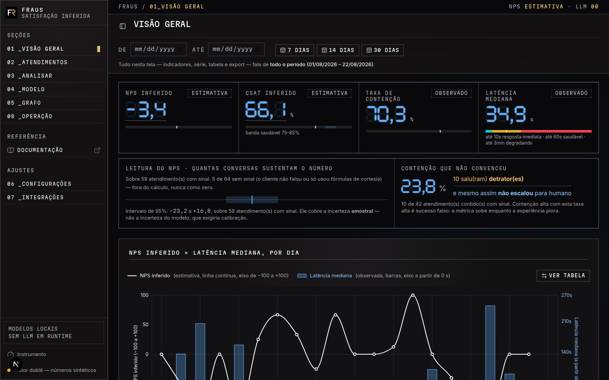 |
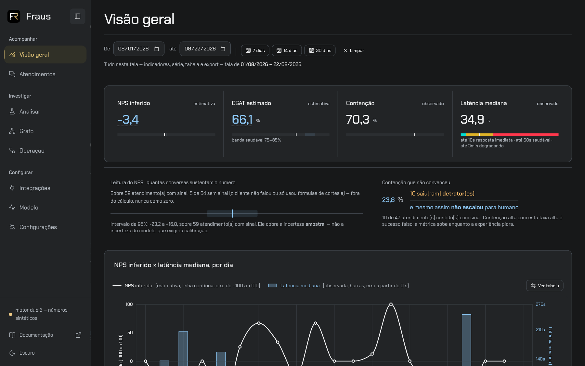 |


| Aspecto | Anterior | Nova direção |
|---|---|---|
| Navegação | Numeração e caixa alta | Sidebar de 224px, rail de 64px e grupos Acompanhar, Investigar e Configurar |
| Valores | Polígonos de sete segmentos | Texto tabular, selecionável e com rótulo acessível |
| Superfícies | Retângulos sem raio e vocabulário de vidro/neon | Regiões opacas, bordas simples e cantos suaves |
| Hierarquia | Instrumentação e telemetria no chassi | Título, filtro e indicadores; NPS × latência continua dominante |
| Temas | Instrumento e Chuva, ambos escuros | Escuro padrão e alternativa Clara |
| Ausência | Display apagado e cabeça vazada | Ausência textual explícita e cabeça vazada, sem virar zero |
Os quatro valores e as ressalvas continuam correspondendo ao mesmo snapshot. Mudou a apresentação, não a regra de score, categoria ou agregação. A sobreposição NPS × latência permanece; o intervalo continua descrevendo incerteza amostral, não erro do modelo. Os cinco atendimentos sem sinal ficam fora da escala de satisfação.
Alternativa clara¶
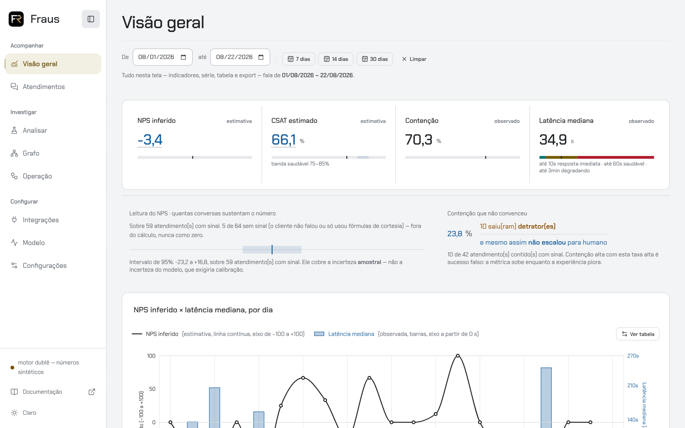
A troca altera o chassi e ajusta a luminância das cores, não o significado das categorias ou dos sinais. A preferência persiste e sincroniza entre abas. A LP e o acesso permanecem escuros sem apagar a escolha da dashboard. Valores antigos de tema retornam ao padrão; não são aliases de novos temas.
Sidebar e navegação¶
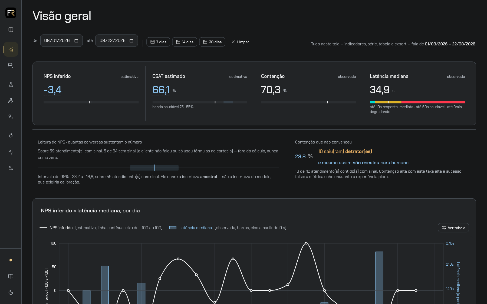
A navegação agrupa tarefas em Acompanhar, Investigar e Configurar.
O último grupo respeita o papel dev; usuário comum continua com os cinco
destinos autorizados. O destino atual recebe indicação acessível, inclusive
quando se está no detalhe de um atendimento.
O rail mantém nomes acessíveis e dicas no foco. A escolha de recolher persiste
em cookie e é restaurada pelo servidor após recarregar. Ctrl/Meta+B alterna
a barra fora de campos de edição; não intercepta input, textarea, select ou
conteúdo editável. Só o período de/ate acompanha a navegação: busca, página
e tokens locais não vazam para outra tela. Sessão, tema e aviso completo de
dados sintéticos permanecem disponíveis.
Um segredo que não mexe nos dados¶
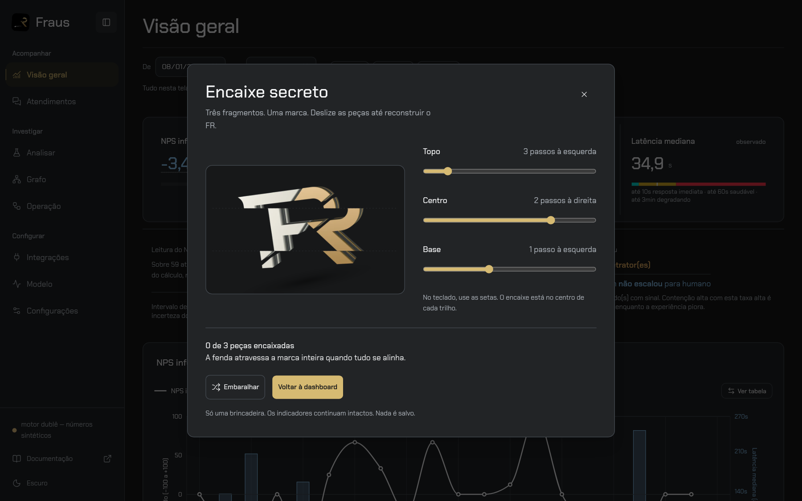
Os cinco cliques na marca continuam descobrindo uma surpresa, agora um quebra-cabeça: alinhar três fragmentos do FR pelos trilhos e reconstruir a marca. Setas do teclado também resolvem; Embaralhar oferece outro arranjo. Não há áudio, cronômetro, gravação ou análise da pessoa.
A antiga encenação que falsificava indicadores e pontuava o ritmo dos cliques foi removida por completo. Os quatro indicadores permanecem idênticos ao abrir, jogar, vencer, embaralhar e fechar. Escape fecha apenas o segredo e devolve foco à marca, mesmo quando aberto de dentro da navegação móvel.
Celular¶
| Antes | Depois |
|---|---|
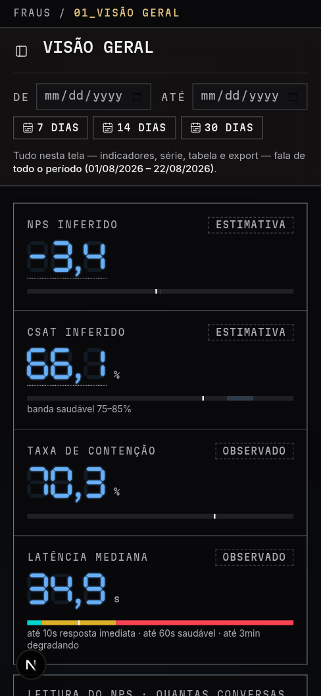 |
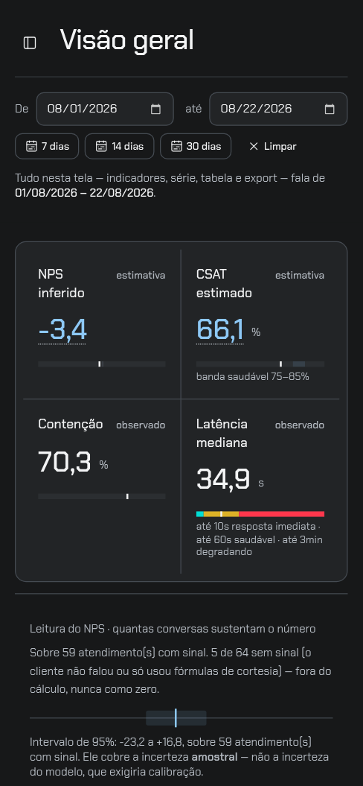 |


A faixa em duas colunas reduz o empilhamento inicial sem retirar rótulos, unidades ou explicação de amostra. A navegação abre como painel com foco contido, botão explícito de fechar e retorno ao acionador por Escape. Navegar fecha o painel; abrir um destino em outra aba não fecha o painel original.
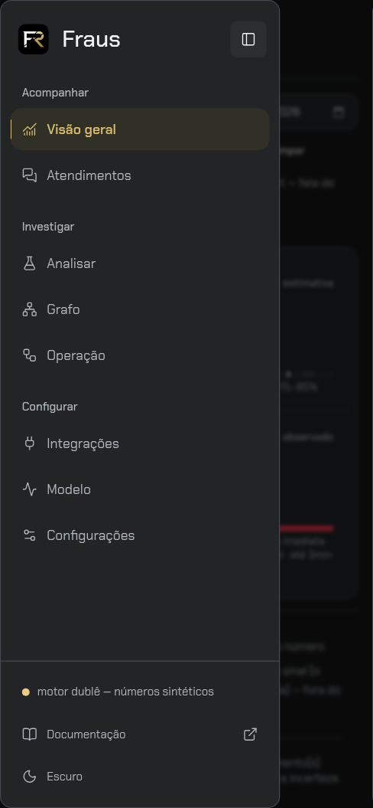
Otimização da LP aprovada¶
A primeira redução do porte v3 eliminou quatro esculturas escondidas: de cinco malhas CSS e 2.475 arestas para uma malha e 495 arestas no desktop; no celular, nenhuma. Isso não resolveu o peso percebido. O ensaio abaixo parte dessa versão já reduzida, não do Instrumento/WebGPU histórico das capturas “antes”.
Isolar a escultura preservando o layout removeu as pausas de rolagem no diagnóstico; retirar apenas o pincel não as removeu. O fundo contínuo aprovado foi preservado. Substituir a malha por WebGL irrestrito também não bastou: SwiftShader continuou caro. Por isso a implementação final distingue os caminhos:
- Contexto elegível: canvas WebGL nativo, um buffer imutável e um draw por quadro, culling de faces, geometria preparada só após aceitar o contexto. Transições sob demanda, sem loop ocioso, DPR máximo de 1,5 e teto de 1,6 MP.
- Backend CPU conhecido ou contexto recusado: poses WebP do mesmo FR, acompanhando a seção sem triangulação nem buffers. Não se troca uma malha DOM cara por animação 3D em software.
- Celular, reduce ou sem JS: arte pré-renderizada.
pictureescolhe 800×640 abaixo de 900px, em vez de 1280×1024. O hero compacto tem 28.386 bytes; não é o peso total da página. Imagens inferiores carregam sob demanda. - O pôster permanece até o primeiro draw válido e reaparece na perda de contexto. Motion continua fora da LP; links públicos não antecipam outras rotas.
Ensaio controlado de rolagem e carga¶
Builds de produção locais, Chromium 154.0.8037.57, contextos novos, cache desabilitado, CPU limitada em 4×, latência de 150 ms, download de 200.000 bytes/s (1,6 Mbps), upload de 100.000 bytes/s e escala 1,25. Após rede e fontes prontas, um percurso cossenoidal de seis segundos percorreu a página inteira e voltou. Uma execução por viewport e versão; não são medianas de várias execuções.
O navegador deste ensaio usa ANGLE SwiftShader, sem aceleração física.
Na versão final, o desktop confirmou estatico/software; o celular não montou
o renderizador. Os intervalos abaixo são entre callbacks de requestAnimationFrame,
não uma medição direta dos frames apresentados pela GPU.
| Medida | Desktop CSS anterior | Desktop final WebP | Celular anterior | Celular final |
|---|---|---|---|---|
| Viewport CSS | 1440×900 | 1440×900 | 390×844 | 390×844 |
| Callbacks em seis segundos | 79 | 350 | 361 | 348 |
| Intervalo p95 entre callbacks (ms) | 200,0 | 16,8 | 16,8 | 16,8 |
| LCP de carga fria (ms) | 1.744 | 1.444 | 1.172 | 1.356 |
| CLS | 0,000486 | 0 | 0 | 0 |
| Transferência inicial medida (bytes) | 357.248 | 346.114 | 354.933 | 338.761 |
| JavaScript transferido (bytes) | 170.942 | 172.160 | 166.997 | 166.898 |
| Tempo de tarefas na main thread durante o percurso (s) | 1,171 | 1,797 | 0,686 | 1,886 |
Resultado observado: as grandes pausas de rolagem do desktop desapareceram neste percurso, preservando a marca. Não houve melhora uniforme: o LCP móvel e o tempo acumulado de tarefas aumentaram; o JavaScript desktop cresceu ligeiramente. Não se alega redução geral de CPU, memória de GPU, INP ou garantia de 60 FPS. A transferência inicial não inclui necessariamente todas as imagens lazy carregadas depois. O ensaio não prova desempenho em aparelho físico ou GPU real.
Reproduzir a verificação funcional¶
Com o produto e a API local em execução, dentro de dashboard/:
npm run test:lp
node scripts/validar-navegacao-playwright.mjs
node scripts/validar-segredo-playwright.mjs
# Apenas QA explícito sem aceleração: exercita pixels e ciclo real do WebGL.
# Não mede o caminho padrão nem forja identificação de hardware.
LP_GL_SOFTWARE=1 npm run test:lp
O smoke padrão informa quando a política escolheu WebP e quais cenários GL não foram exercitados. A autorização explícita de software existe no navegador de QA/exportação, não como parâmetro de produto. “Contexto elegível” também não comprova GPU física quando o navegador oculta o nome do driver.
Verificação e limites¶
- Build de produção e TypeScript concluídos; 323 testes de front aprovados.
- Lint das fontes afetadas e scripts de renderização aprovado.
- Contraste de texto e marcas nos dois temas, e superfícies opacas verificados.
- Smoke padrão da LP concluído em 1280 × 720, 1440 × 900, 390 × 844 e 320 × 844, cada tamanho normal, com movimento reduzido e sem JavaScript.
- Exercitados teclado, detalhes nativos, ausência de leituras, destinos reais
e redirect de
/leitura. No QA WebGL explicitamente autorizado em software: retarget, retorno, replay com três quadros distintos e pose final idêntica, sem alterar scroll, mudança de movimento em runtime, breakpoint 899/900, ausência de loop ocioso e perda/restauração de contexto. - Limite do QA forçado: após esses cenários, o Chromium encerrou a página
ao abrir o cenário de acesso (
Page crashedempage.goto). A execução integral forçada não é declarada aprovada; o cenário de acesso concluiu na execução padrão. A causa do crash não foi determinada. - Dashboard operada em desktop e celular: valores do mesmo recorte, tabela do gráfico, navegação móvel, alternância de tema e sincronização entre abas.
- O smoke completo da sidebar passou antes da troca do segredo. Na repetição
após a troca, o Chromium encerrou ao iniciar o contexto móvel, depois dos
cenários desktop (
Target page, context or browser has been closedempage.goto). Essa repetição não é declarada integralmente aprovada; a causa não foi determinada. O smoke do segredo cobre sua integração com a gaveta e navegação móvel após fechar o jogo. - Encaixe secreto resolvido por teclado; arte recomposta, embaralhar/reabrir e indicadores preservados; desktop e celular, incluindo Claro e reduce.
- Filtro de sete dias preservado na navegação para atendimentos; amostra insuficiente mantém “Sem estimativa”. Período sem conversas mantém ausência, e atendimento sem fala do cliente mantém “Sem sinal”, nunca zero.
- Builds internos e públicos da documentação em modo estrito; 46 testes dos contratos entre dashboard/modelo e da fronteira documental aprovados.
- Grafo com dados sintéticos operado nos dois temas; navegação LP → dashboard → LP preservou a preferência clara da ferramenta e o fundo escuro da LP. O dublê informa ausência de eixo aprendido, sem inventar arestas de feature.
Limites: não houve estudo com usuários nem teste em aparelho físico. O smoke validou o estado de ausência da LP, não análises por um checkpoint real. A API de demonstração e seus números não constituem evidência de qualidade dos modelos. O site MkDocs, o banner do repositório e os ícones/cartão de compartilhamento mantêm seus ativos anteriores; o redesign desta entrega cobre LP e dashboard.